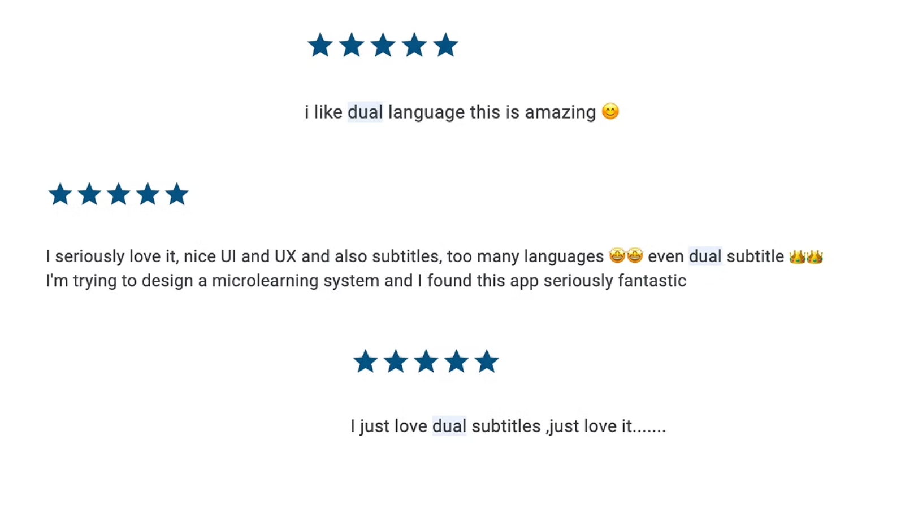

TED App
Dual subtitles doubled viewing time for non-English speakers
I led international UX research across 13 languages to understand why TED's global users were dropping off. The insight: non-native English speakers were pausing constantly to look up words, interrupting their viewing experience. I designed a dual-subtitle feature that displays both English and the user's native language simultaneously—a simple solution that doubled time spent in the app for this audience.
The challenge
TED's app had strong international adoption, but engagement lagged. With more than 80% of all users located outside the US, and with almost all TED Talks spoken in English, we suspected language barriers were the culprit.
What I did
Based on users' app and subtitles language settings, we estimated that 70% of app users are non-native English speakers, and 20% of them are English-learners. With this in mind, I led the research and spoke to 30 users representing 13 languages.
The consistent finding: Non-native English speakers always require local subtitles to fully enjoy TED talks. More interestingly, English learners, even when they set their subtitle language to English for learning purposes, still desire instant access to their native subtitle language to successfully follow along.
Existing solutions forced a choice—English OR translated subtitles—which satisfied neither goal.
The solution
Dual subtitles: native language on top, English below. We also made it clear that users can choose whether they'd like to keep the English subtitles when their preferred subtitle language isn't available yet.
Smart homepage feed: adapts the TED Talks we show based on users' English proficiency, inferred from their app and subtitle language settings. The outcome of this feature wasn't measured due to a re-org.
I validated the prototype with users in China, Japan, and Korea before shipping, and received all green lights to go.

Dual subtitles settings in Android.

How home screen content adapts to app language settings.
Outcomes
- 2× time spent by non-English users with dual subtitles feature enabled, one year post-launch
- Dual subtitles became one of the app's highest-rated features in app store reviews
